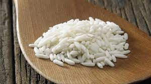

 Beras ketan (Oryza sativa var. glutinosa) adalah sebuah jenis beras yang utamanya tumbuh di Asia Tenggara dan Asia bagian timur. Beras ketan digunakan pada berbagai resep di Asia Tenggara dan Asia Timur. Di Indonesia, beras ketan merupakan salah-satu bahan penting dalam banyak resep makanan.